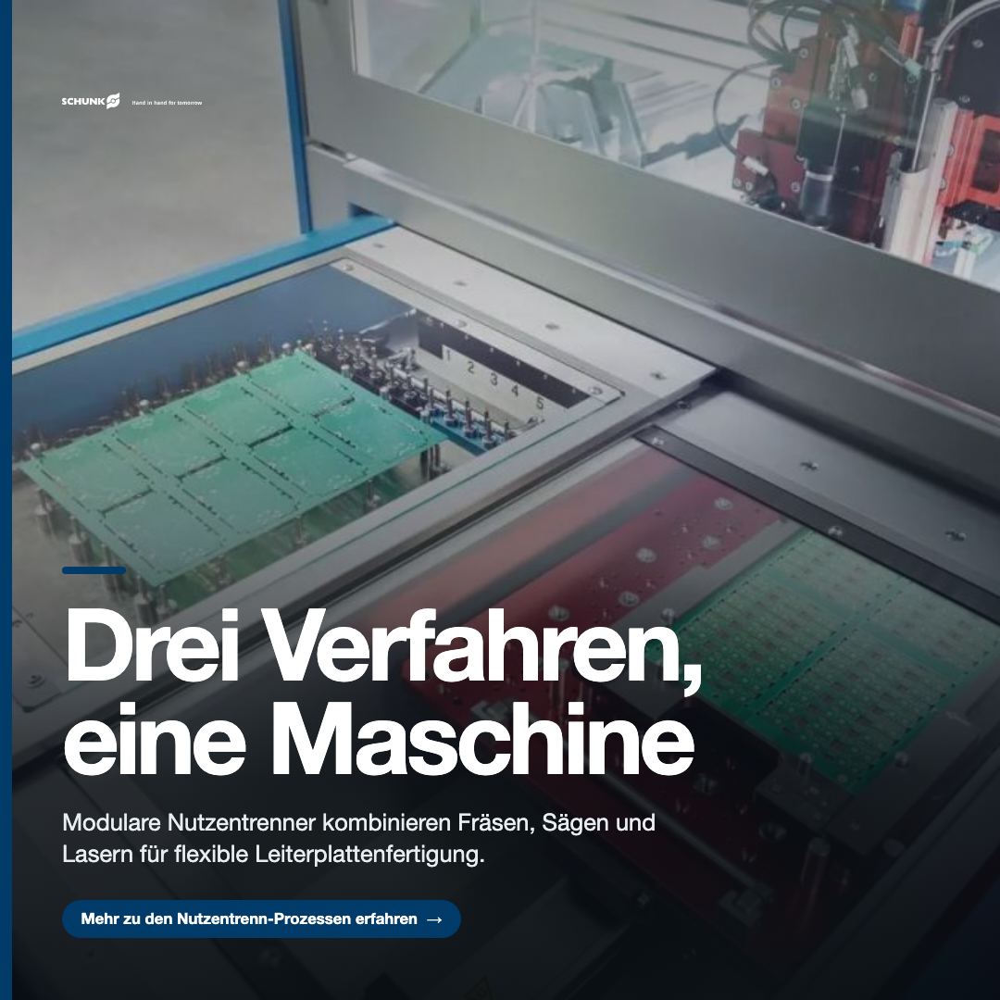
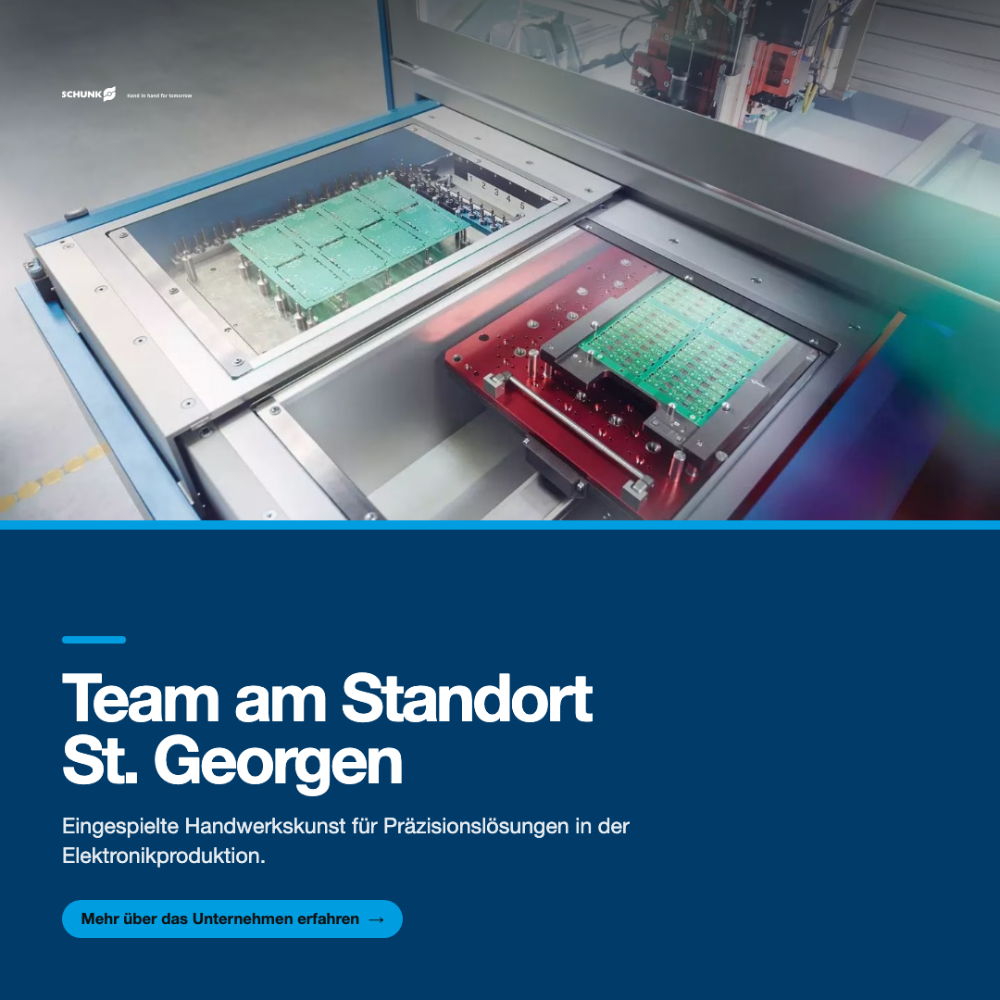
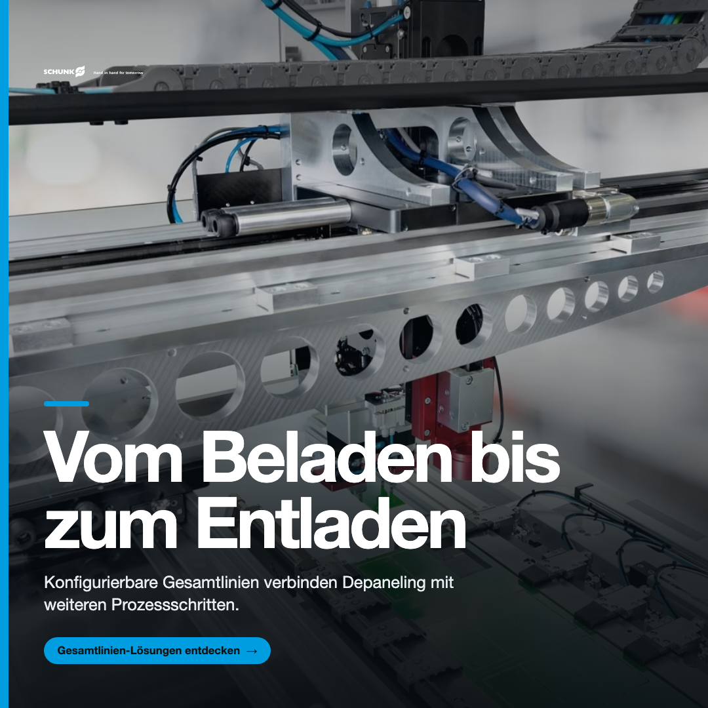

MARKETS
EDITION 08 · 2026
SCHUNK Electronic
Solutions
Ein datenbasiertes Konzept, um Ihre technische Kompetenz in der Elektronikproduktion sichtbar zu machen und zu qualifizierten Anfragen zu führen.
![SCHUNK Electronic Solutions]()
Wo SCHUNK Electronic Solutions
heute steht
Bestandsaufnahme von Marke, Kanälen und bisheriger Kommunikation — ehrlich und ohne Schönfärberei.
Wo SCHUNK Electronic Solutions heute steht
Stärken treffen Chancen
- —Weltweit erster Hersteller mit modular konzipierten Nutzentrennern
- —Teil der SCHUNK-Gruppe, weltweiter Marktführer bei Greifsystemen und Spanntechnik
- —Energieeffiziente Geräte, Verbrauch kaum höher als eine Mikrowelle
- —Komplettangebot von Produktauswahl über Inbetriebnahme bis Service aus einer Hand
- —Keine Seite mit korrekter H1-Struktur, alle mit mehreren H1
- —Canonical-Tags und Open-Graph-Tags fehlen auf allen 11 Seiten
- —Nur 47 Prozent der Bilder verfügen über Alt-Texte
- —SES-spezifische Bespielung der verlinkten Social-Profile von außen nicht erkennbar
- —Fachcontent kann Autorität im Nischenmarkt Nutzentrenntechnik stärken
- —LinkedIn-Ausbau kann Lead-Anbahnung im B2B-Bereich verbessern
- —Bessere SEO-Struktur kann organische Sichtbarkeit deutlich erhöhen
- —Visuelle Einblicke können Recruiting-Wirkung am Standort unterstützen
- —Wettbewerber mit stärkerer digitaler Präsenz können Sichtbarkeit gewinnen
- —Fehlende strukturierte Daten könnten KI-gestützte Suche benachteiligen
- —Ohne regelmäßige Bespielung droht Sichtbarkeitsverlust auf Social Media
Klare Ziele,
klare Kennzahlen
Vier priorisierte Ziele, abgeleitet aus dem Status quo — jedes mit Kennzahlen, an denen sich Erfolg messen lässt.
Vier Ziele, die aufeinander einzahlen
Technische Entscheider und Einkäufer erhalten regelmäßig fundierte Einblicke in Nutzentrenntechnik und Prozesslösungen.
Regelmäßige, fachlich fundierte Beiträge positionieren Sie als Spezialist für Nutzentrenntechnik im relevanten Fachpublikum.
Werkstückträger, Gesamtlinien, Schulungen und Service werden entlang konkreter Kundennutzen erklärt statt nur aufgezählt.
Menschen und Fertigungstiefe am Standort St. Georgen stärken Marke und Recruiting-Wirkung gleichermaßen.
Drei Kanäle,
klare Rollen
LinkedIn, Instagram und Facebook — jeder mit eigener Aufgabe, Zielgruppe und Tonalität, aber einer gemeinsamen Story.
Jeder Kanal mit eigener Aufgabe
Einmal produzieren, dreimal erzählen
Ein Beitrag über modulare Nutzentrenner wird für jeden Kanal angepasst: fachlich vertiefend auf LinkedIn, visuell auf Instagram, zugänglich auf Facebook. So erreichen Sie unterschiedliche Zielgruppen mit derselben Kernbotschaft, ohne an Präzision zu verlieren.
Technische Tiefe zu modularer Nutzentrenntechnik, Investitionssicherheit und Prozesssicherheit für Entscheider in der Elektronikfertigung.
Nahaufnahmen der Nutzentrenner in Aktion, kombiniert mit Menschen und Fertigung am Standort St. Georgen.
Kompakte Unternehmensnachricht zu Neuheiten, Terminen oder Service-Themen für ein breiteres Publikum.
Fünf Content-
Pillars
Ein System aus Themensäulen — damit jeder Beitrag ein Ziel hat und die Marke über Zeit ein klares Profil bekommt.
Fünf Säulen, ein Profil
Erklärungsbedürftige Nutzentrenntechnik und Prozesslösungen verständlich und vertrauensbildend vermitteln.
Das Leistungsspektrum entlang konkreter Nutzenversprechen erklären statt nur aufzuzählen.
Werte und Qualitätsversprechen des Markenauftritts mit belegbaren Aussagen unterlegen.
Mitarbeitende und authentische Einblicke am Standort St. Georgen sichtbar machen, um Marke und Recruiting zu stärken.
Nur belegte Fakten und Positionen nutzen, um Glaubwürdigkeit ohne unbelegte Superlative zu schaffen.
Von der Säule zum Beitrag
Vom Plan
zum Beitrag
Ein konkreter Redaktionsplan über vier Wochen — mit realistischer Frequenz, Formatmix und ausgewogenen Contentschwerpunkten.
Redaktionsplan · Woche 1 & 2
Redaktionsplan · Woche 3 & 4
Zwölf Posts,
kein Copy-Paste
Vier Beiträge je Kanal — kanalgerecht in Tonalität, Format und CTA, als fertige KI-Motive im 4-Wochen-Kalender. Anschließend drei davon als Mockup im SCHUNK Electronic Solutions-Branding.
Zwölf Motive, ein Fahrplan

Fachwissen & Problemlösung
Als weltweit erster Hersteller konzipiert SCHUNK Electronic Solutions Nutzentrenner modular: Fräsen, Sägen und Lasern lassen sich auf einer Maschine kombinieren. Für Hersteller elektronischer Baugruppen bedeutet das mehr Flexibilität bei unterschiedlichen Leiterplatten-Layouts – ohne für jeden Trennprozess eine eigene Anlage vorhalten zu müssen. Die modulare Bauweise erlaubt es, Prozesse gezielt an aktuelle Anforderungen anzupassen und bei Bedarf schrittweise zu erweitern. So bleibt die Investition auch bei wachsenden oder wechselnden Stückzahlen wirtschaftlich sinnvoll. Für Entscheider in der Elektronikfertigung ist das ein Beitrag zu mehr Planungssicherheit in einem Markt mit kurzen Produktzyklen.
#Nutzentrenntechnik #Elektronikproduktion #Leiterplattenfertigung #Automatisierung


Menschen & Unternehmenskultur

schunk_electronic_solutions Hinter jeder Präzisionslösung steht ein eingespieltes Team. Am Standort St. Georgen/Peterzell arbeiten unsere Kolleginnen und Kollegen täglich daran, Nutzentrenner und Werkstückträger für die Elektronikproduktion zu fertigen und weiterzuentwickeln. Handwerkliches Können trifft auf technisches Detailwissen – Tag für Tag, Maschine für Maschine.

Fachwissen & Problemlösung
Beladen, Depaneling und automatisches Entladen – konfigurierbare Gesamtlinien bringen diese Schritte in der Elektronikfertigung zusammen. Statt einzelner Insellösungen entsteht ein durchgängiger Prozess mit weniger Unterbrechungen und konstanteren Ergebnissen. Für Fertigungsbetriebe, die ihre Linien automatisieren möchten, ein praxisnaher Ansatz aus einer Hand.

Von der Idee
zur Umsetzung
Was wir empfehlen — und wie eine Zusammenarbeit konkret abläuft, Schritt für Schritt.
Vier Empfehlungen auf den Punkt
Klare H1-Struktur, Canonical-Tags und Open-Graph-Tags einführen, um technische Auffindbarkeit und Social-Vorschauen deutlich zu verbessern.
Regelmäßige, fachlich fundierte Beiträge zu Nutzentrenntechnik und Prozesslösungen etablieren, um Fachautorität und Lead-Anbahnung zu stärken.
Fehlende Alt-Texte für Produktbilder ergänzen, um Barrierefreiheit und Bildersuche-Sichtbarkeit zu verbessern.
Innerhalb der konzernweiten Profile gezielt SES-Themen platzieren, um Sichtbarkeit für die Elektronikproduktion zu erhöhen.
So arbeiten wir zusammen
Ziele, Tonalität und Themen gemeinsam schärfen.
Monatlicher Contentplan je Kanal und Pillar.
Text, Grafik & Video — im Branding des Kunden.
Kurze Freigabeschleife — Sie behalten die Kontrolle.
Ausspielung, Monitoring und Antworten.
Kennzahlen auswerten — und zurück zu Schritt 1.
Was Umsetzung kostet
Marketingkonzept, 9 Posts, Flyer, Print-Vorlagen, Visitenkarten, private Landingpage & SEO/GEO-Check — in 24 h.
Sprechen wir über
Ihre Sichtbarkeit.
Ein unverbindliches Erstgespräch genügt, um zu sehen, was für SCHUNK Electronic Solutions realistisch drin ist. Ich freue mich darauf.
MARKETS
![QR-Code]()